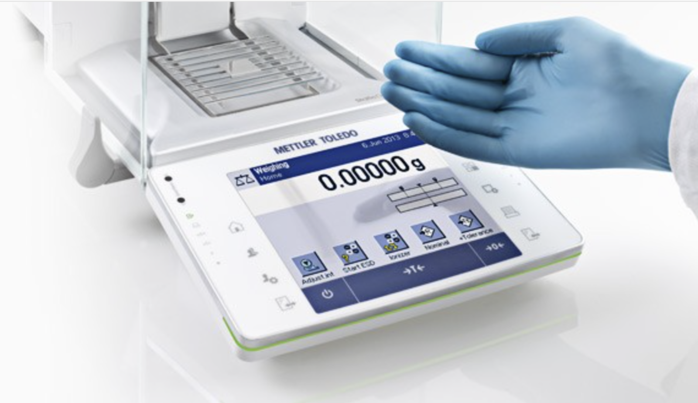

08.08.2007
Die passende Laborwaage von METTLER TOLEDO
Der Online-Berater führt Kunden in wenigen Schritten zur passenden Laborwaage.
Kunde
Aufgabe
Die Wahl der richtigen Laborwage ist von den Anforderungen abhängig. Relevant sind Kriterien wie Arbeitsumgebung, Maximal- bzw. Minimalgewicht, Wägetoleranz sowie regulatorische Anforderungen.
Umsetzung
Der Online-Berater für Laborwagen von METTLER TOLEDO führt den Kunden in wenigen Schritten zur passenden Laborwaage. Die passende Auswahl von Waagen kann in einem weiteren Schritt einfach verglichen werden.
Kundennutzen
Der Kunde wird passenden Produkten geführt und kann diese einfach miteinander vergleichen. Abgeschlossen wird die Suche und der Vergleich mit der Anforderung eines Angebots für die passende Laborwaage.
